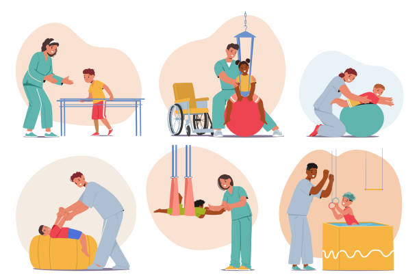

Nuestras instalaciones


Cuidamos tu salud y movimiento
Somos un centro de fisioterapia enfocado en la prevención, tratamiento y rehabilitación de lesiones físicas, ayudando a mejorar la calidad de vida de nuestros pacientes.
La fisioterapia es una disciplina de la salud que utiliza técnicas como ejercicios terapéuticos, masajes y estiramientos para recuperar el movimiento y reducir el dolor corporal.